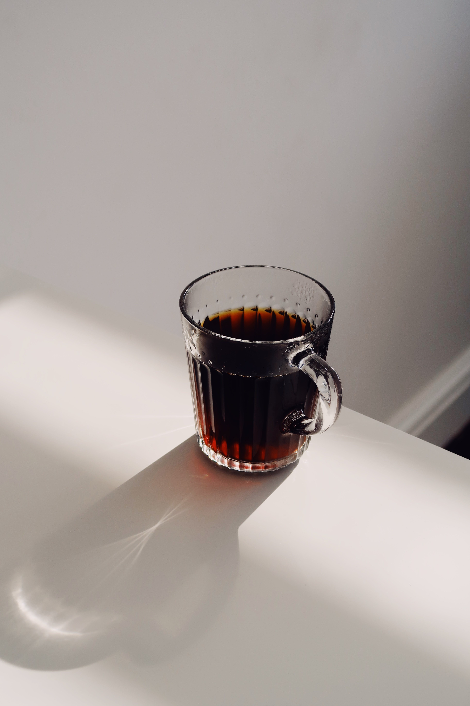

Black Tea

Description
Black tea is a tea made without milk with just tea powder and water. It is made usually without any sweetener but if is your preference to use sweetener or not. You can choose to use healthy alternate to white sugar such as honey or brown sugar.
Ingredients
- Black tea powder
- Water
- Sweetener
Steps
- To begin with first boil water well.
- Add tea powder.
- Boil for at least 3 mins.
- The color changes to darker shade.
- Look at the color.
- Switch off.
- Remove from flame, close with lid and set aside for few mins for all the flavors to steep in.
- Now add sugar. I used cane sugar. You can use honey or brown sugar or skip it too.
- Strain and add black tea to it.
- Mix well.
- Add to serving glass.